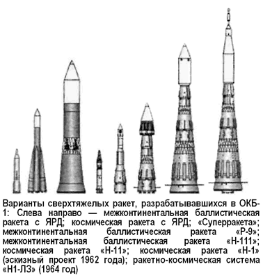
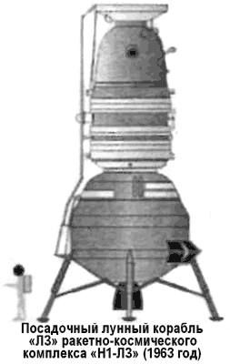
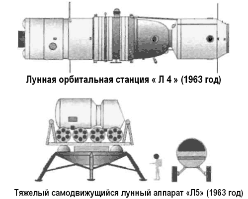
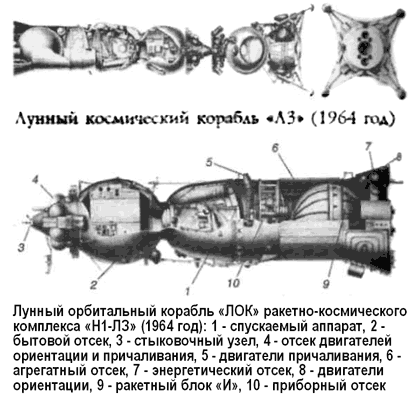
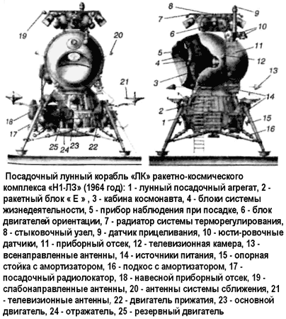

Ракетно-космическая система «Н1-ЛЗ»
То, что Советский Союз проиграл «лунную гонку», ныне принято связывать с провалом программы создания сверхтяжелой ракетыносителя «Н-1». В этом есть свой резон, ведь если бы такая ракета сумела взлететь в установленные сроки, советский план экспедиции на Луну мог быть реализован куда раньше американского. Однако взлететь ей было не суждено.
По свидетельству соратников Королева, замысел сверхтяжелой трехступенчатой ракеты «Н-1» возник у Сергея Павловича еще в 1956 году. В различных источниках название ракеты расшифровывается как «Носитель-1» или как «Наука-1».
Впервые свои предложения по такой ракете Королев представил Совету главных конструкторов 15 июля 1957 года. Начало же работ над проектом «Н-1» датируется 30 июля 1958 года.
В то время прорабатывалось множество возможных вариантов таких ракет, хотя к дальнейшему рассмотрению были приняты три.

Первый вариант являлся логическим продолжением ракеты «Р-7». Это была двухступенчатая ракета, у которой на основной корпус (вторая ступень) крепились шесть «боковушек» (первая ступень). То есть повторялась та же компоновка, которая успешно зарекомендовала себя на «семерке».
Длина такого пакета составляла 48 метров. Каждая из «боковушек» снабжалась шестью кислородно-керосиновыми двигателями конструкции Николая Кузнецова. На второй ступени предполагалось установить ядерный двигатель, который включался бы после отделения первой ступени и обеспечивал тягу от 140 до 170 тонн. Стартовая масса такой ракеты составляла от 850 до 880 тонн, а выводимый на орбиту полезный груз — от 35 до 40 тонн.
Второй вариант представлял собой в чистом виде межконтинентальную баллистическую ракету с дальностью полета до 14 000 километров. Для этой ракеты рассматривалась возможность использования двигателей конструкции Валентина Глушко и Михаила Бондарюка. При использовании двигателя Бондарюка ракета имела бы стартовую массу 87 тонн, включая боеголовку весом 2,6 тонны. С двигателями Глушко, соответственно, 100 тонн стартовой массы и 4-тонная боеголовка. И, наконец, третий вариант представлял собой носитель сверхтяжелого класса со стартовой массой 2000 тонн и массой полезного груза, выводимого на орбиту, в 150 тонн. Это в принципе и был прообраз той ракеты, которая впоследствии стала известна под обозначением «Н-1». Первую и вторую ступени предполагалось выполнить в виде конуса, что позже и было использовано в конструкции «Н-1». На первой ступени размещались 24 двигателя «НК-9» конструкции Кузнецова с тягой в 52 тонны каждый. Вторая ступень имела четыре ядерных двигателя с общей тягой в 850 тонн.
Ни одному из этих вариантов, в том виде как они задумывались, не суждено было воплотиться в реальности. Работы над ракетами с ядерными двигателями были прекращены в конце 1959 года, когда стало ясно, что и обычный химический двигатель дает почти тот же эффект, но при этом ему не нужна сложная система защиты от радиации.
Первоначально эскизное проектирование сверхтяжелой ракеты проводилось ОКБ-1 в инициативном порядке. Однако уже 23 июня 1960 года вышло постановление ЦК КПСС и Совета Министров № 715–296 «О создании мощных ракетносителей, спутников, космических кораблей и освоении космического пространства в 1960–1967 годах». Это была первая попытка утвердить на самом высоком уровне программу развития космонавтики в виде семилетнего плана. В постановлении предусматривалось создание мощной ракеты-носителя «Н-1» на ЖРД в период с 1961 по 1963 годРакета «Н-1» должна была выводить на околоземную орбиту полезный груз массой 40–50 тонн и разгонять до второй космической скорости полезный груз массой 10-2 0 тонн.
Вторым этапом на базе этой ракеты предполагалось создать носитель «Н-2», выводящий на орбиту 60–80 тонн и разгоняющий до второй космической скорости 20–40 тонн.
В обеспечение этих проектов постановлением также предусматривались работы над мощными двигателями на водороде, по системам автономного управления и радиоуправления, развитие экспериментальной базы и широкое проведение научных исследований. 9 сентября 1960 года Королев издал отчет «О возможных характеристиках космических ракет с использованием водорода», в которых показал преимущества водородно-кислородных двигателей. Тут нужно отметить, что именно вопрос об использовании водорода в качестве горючего для перспективных ракет стал тем «камнем преткновения», из-за которого произошел серьезнейший раскол в Совете Главных конструкторов. Разногласия начались еще в ходе работы над межконтинентальной баллистической ракетой «Р-9А». Корифей двигателестроения Валентин Глушко не простил Королеву привлечения к работам по созданию мощных ЖРД моторостроительных организаций авиационной промышленности — ОКБ-165 Архипа Люльки, разрабатывающего двигатель на водороде, и ОКБ-276 Николая Кузнецова, разрабатывающего двигатель на кислороде — керосине. Это был прямой вызов Глушко — старому соратнику по РНИИ, казанскому КБ, институту «Нордхаузен» и Совету Главных конструкторов, в котором Глушко был вторым человеком после Королева. Спор по двигателям для «Р-9А» из сферы делового обсуждения перерос в откровенную склоку. Два конструктора обменивались нелицеприятными письмами, копии которых направлялись министрам и в ЦК КПСС.
Аналогичную позицию Глушко занял и по вопросу «Н-1».
На всех уровнях при обсуждениях проблем двигателей для первой ступени ракеты «Н-1» Глушко заявлял, что для его организации не представит особого труда создание двигателей тягой до 600 тонн на высококипящих компонентах — AT (тетраксид азота) и НДМГ (несимметричный диметилгидразин).
В то же время создание двигателя такой размерности на кислороде и керосине, по мнению Глушко, было связано с неприемлемо длительными сроками.
Валентин Глушко являлся общепризнанным авторитетом по жидкостным ракетным двигателям, но теперь уже очевидно, что в начале 60-х он серьезно ошибся, отказавшись от разработки кислородно-керосиновых и кислородно-водородных двигателей. На этом поприще мы обогнали американцев только через 20 лет при создании ракеты «Энергия», которая, кстати, была построена под непосредственным руководством Глушко, когда он в должности Генерального конструктора НПО «Энергия» фактически находился на месте Королева. Но тогда раскол в лагере Главных конструкторов по вопросу двигателей принял угрожающие размеры. В спор между двумя столпами советской ракетной техники включились Михаил Янгель и Владимир Челомей. Монополия Королева на тяжелые ракеты-носители угрожала их активному участию в перспективных космических программах. Началась мощная атака на правительственный аппарат с разных сторон с критикой ранее принятых решений. Одним из результатов явилось еще одно постановление, подписанное Хрущевым 16 апреля 1962 года: «О создании образцов межконтинентальных баллистических и глобальных ракет и носителей тяжелых космических объектов». Этим постановлением работы по «Н-1» предлагалось ограничить стадией эскизного проекта и оценкой стоимости ракетного комплекса.
Одновременно предписывалось создание орбитальной трехступенчатой глобальной ракеты на базе «Р-9А», но не на двигателях Глушко, а на двигателях «НК-9», разрабатываемых Николаем Кузнецовым. Постановлением было также предусмотрено создание новой янгелевской сверхтяжелой ракеты «Р-56». Следом вышло постановление от 29 апреля 1962 года, коим предписывалось ОКБ-52, то есть Челомею, создание «УР-500» — будущего «Протона». Экспертная комиссия под председательством президента Академии наук Мстислава Келдыша должна была дать рекомендации, какой путь выбрать, только после рассмотрения эскизных проектов. Об организации целенаправленной подготовки пилотируемого полета к Луне в этих постановлениях не говорилось.
В 1962 году продолжалась работа по выбору схемы и стартовой массы ракеты-носителя, которой предстояло, по замыслу Королева, решать многие научные и оборонные задачи, а отнюдь не только доставлять экспедицию на Луну.
В письме Сергею Крюкову, начальнику проектного отдела, Королев пишет: «Вместе с М. В. Мельниковым определить потребный вес для полета с ЭРД для решения главных задач: Луна, Марс, Венера».
Министерство обороны не было заинтересовано в создании сверхтяжелых носителей. В то же время без согласия военных на их непосредственное участие в создании такого носителя эскизный проект не мог быть одобрен экспертной комиссией.
Эскизный проект ракетно-космических систем на базе «Н-1» Королев утвердил 16 мая 1962 года. Проект был выпущен в соответствии с упомянутым выше постановлением от 23 июня I960 года и формально удовлетворял последнему апрельскому постановлению 1962 года. Он содержал 29 томов и 8 приложений.
В этом эскизном проекте, который подписали все заместители Королева, ставились следующие основные задачи (цитирую по книге Бориса Чертока «Ракеты и люди. Лунная гонка», 1999 год):
«А. Выведение тяжелых космических летательных аппаратов (КЛА) на орбиты вокруг Земли с целью исследования природы космического излучения, происхождения и развития планет, радиации Солнца, природы тяготения, изучения физических условий на ближайших планетах, выявления форм органической жизни в условиях, отличных от земных, и т. д.
Б. Выведение автоматических и пилотируемых тяжелых ИСЗ на высокие орбиты с целью ретрансляции передач телевидения и радио, обеспечения прогноза погоды и т. д.
В. При необходимости вывод тяжелых автоматических и пилотируемых станций боевого назначения, способных длительно существовать на орбитах и позволяющих производить маневр для одновременного вывода на орбиту большого количества ИСЗ военного назначения».
Декларировались основные этапы дальнейшего освоения космоса:
«Облет Луны с экипажем из двух-трех космонавтов; вывод КЛА на орбиту вокруг Луны, высадка на Луну, исследование ее поверхности, возвращение на Землю; осуществление экспедиции на поверхность Луны с целью исследования почвы, рельефа, проведения изысканий по выбору места для исследовательской базы на Луне; создание на Луне исследовательской базы и осуществление транспортных связей между Землей и Луной; облет экипажем в два-три человека Марса, Венеры и возвращение на Землю; осуществление экспедиций на поверхность Марса и Венеры и выбор места для исследовательской базы; создание исследовательских баз на Марсе и осуществление транспортных связей между Землей и планетами; запуск автоматических аппаратов для исследования околосолнечного пространства и дальних планет системы (Юпитер, Сатурн и др.)».
К сожалению, ни один из этих этапов так и не был реализован в полном объеме. Недостижимой мечтой кажутся они нам и сегодня.
Уже в эскизном проекте стартовая масса носителя возросла по сравнению с первоначальными набросками до 2200 тонн, а грузоподъемность — до 75 тонн. Ракета проектировалась трехступенчатой, и все три ступени выполнялись в виде конуса, в который вписывались шесть сферических топливных баков последовательно уменьшающегося диаметра.
Вся ракета проектировалась на ЖРД Николая Кузнецова; на компонентах — жидкий кислород и керосин. На первой ступени (блок «А») устанавливались 24 двигателя тягой по 150 тонн. На второй (блок «Б») и третьей (блок «В») соответственно по восемь и четыре двигателя. Блоки «А» и «Б» комплектовались практически однотипными двигателями «НК-15». Блок «В» планировалось снабдить двигателями «НК-19». Предусматривалась возможность размещения на ракете еще одной, четвертой, ступени (блок «Г»).
Во времена проектирования «Р-7» Василий Мишин, занимавший должность заместителя Королева, выступал с идеей управления ракетой форсированием и дросселированием диаметрально противостоящих двигателей. Тогда его предложение не получило одобрения со стороны Валентина Глушко, который отвечал за разработку двигателей. Однако на «Н-1» 24 двигателя, расположенные по окружности диаметром 15 метров, позволяли реализовать эту идею, тем более что двигателисты авиационного ОКБ-276 были знакомы с этой задачей и успешно решали ее.
В интересах военных «Н-1» проектировалась в нескольких модификациях.
Трехступенчатая ракета «Н-1», снабженная блоком «Г», позволяла выводить на околоземную орбиту груз массой 75 тонн.
Трехступенчатая ракета «Н-11» на базе ступеней «Б», «В» и «Г» со стартовой массой 750 тонн позволяла выводить на околоземную орбиту груз массой до 25 тонн.
Двухступенчатая ракета «Н-111» на базе ступеней «В» и «Г», снабженная 2-й ступенью МБР «Р-9А», со стартовой массой 200 тонн могла быть использована в качестве боевой межконтинентальной ракеты с массой боеголовки в 5 тонн.
Несмотря на очевидную рациональность, предложение о начале работ по созданию «Н-11» и «Н-111» не было в дальнейшем поддержано ни решениями экспертных комиссий, ни военными, ни постановлениями правительства. Идея была перекрыта в связи с предложениями Челомея по «УР-500» и Янгеля по «Р-56»…
В эскизном проекте 1962 года лунная экспедиция еще не была названа главной задачей носителя. Комплекс, состоявший из лунного орбитального корабля (ЛОК), посадочного лунного корабля (ЛК) и разгонной ракеты, назвали весьма прозаически — «ЛЗ».
На самом же деле проекта комплекса «ЛЗ» в 1962 году еще не было. Более того, чтобы «не дразнить гусей», не афишировались (да и не были серьезно просчитаны) распределения масс для лунного комплекса и, в частности, масса лунного корабля, необходимая для посадки с маневрированием, надежного взлета с поверхности Луны и последующего сближения с орбитальным кораблем. Поэтому на пленарном заседании экспертной комиссии Королев представлял только проект ракеты-носителя «Н-1», без проектов полезной нагрузки. Задачи, которые могли быть решены с помощью такой ракеты-носителя, были им перечислены в следующей последовательности: оборонные; научные; освоение человеком Луны и ближайших планет Солнечной системы (Марс, Венера); всеобщая связь и ретрансляция радио и телевидения; постоянная система (несколько сот спутников) для слежения, обнаружения и уничтожения ракет противника. Интересно, что последняя задача в этом перечне предвосхитила идею СОИ, разработка которой в США началась только через 30 лет!
В июле 1962 года экспертная комиссия под председательством академика Келдыша рассмотрела эскизный проект и одобрила создание ракеты-носителя «Н-1», способной выводить на околоземную орбиту высотой 300 километров полезный груз массой 75 тонн. 24 сентября 1962 года было выпущено постановление ЦК КПСС и Совета Министров по «Н-1». Новым постановлением предписывалось закончить стендовую отработку автономных двигателей третьей ступени в 1964 году, двигателей второй и первой ступеней — в 1965 году. Стендовую отработку двигателей в составе блоков и установок предусматривалось закончить в первом квартале 1965 года. Окончание строительства стартовой позиции, сдача ее в эксплуатацию и начало летных испытаний — все тот же 1965 год.
Этот план вызвал резкую критику со стороны отдельных Главных конструкторов.
Владимир Бармин, который должен был строить стартовый комплекс, считал постановление нелепым, а сроки — нереальными.
Леонид Воскресенский, отвечавший за наземную проверку двигателей для ракеты, потребовал создания стендов для полномасштабных испытаний каждой ступени, в том числе и первой — со всеми 24 двигателями. Королев меж тем хотел избежать необходимости строительства новых и очень дорогостоящих стендов для огневых испытаний ступеней ракеты целиком. Он надеялся, что все огневые стендовые испытания для всех ступеней можно ограничить единичными двигателями, приспособив уже существующие стенды НИИ-229.
Дело в том, что такой стенд пришлось бы строить непосредственно на полигоне, ведь первая ступень в полной сборке была нетранспортабельна. В этом споре победа осталась за Королевым, но лучше бы было наоборот, потому что отсутствие уверенности в надежности ступеней стало одной из причин краха программы «Н-1».
До конца 1963 года структурная схема лунной экспедиции с использованием комплекса «Н1-ЛЗ» еще не была выбрана.
Но в докладной записке от 23 сентября 1963 года, посвященной программе развития космонавтики на период с 1965 по 1975 год, Сергей Королев излагает свой план покорения естественного спутника Земли.
Первый этап — облет Луны на пилотируемом корабле «7К-9К-НК» («Л1»), собираемом на околоземной орбите.
Этот этап мы обсуждали выше. К сказанному добавлю только, что экипаж облетного корабля должен был произвести подробное картографирование поверхности Луны и определить возможные районы высадки будущей экспедиции.
Второй этап — отправка на Луну самодвижущегося вездехода «Л2» с дистанционным управлением. Главной задачей «лунохода» было изучение поверхности Луны с целью выбора оптимального места посадки для основного и резервного лунного корабля. Кроме того, «луноход» должен был собрать данные о свойствах лунного грунта, о магнитных полях Луны и интенсивности космического и солнечного излучения у поверхности Луны. Сам «Л2» представлял собой гусеничный транспортер с ядерной силовой установкой, снабженный мощной радиостанцией, системой дистанционного управления и блоком научной аппаратуры. Он мог бы развивать скорость до 4 км/ч и пройти не менее 2500 километров.
На поверхность Луны этот вездеход должен был доставить посадочный аппарат «13К». Вся космическая система состояла из трех элементов: собственно «Л2», посадочный аппарат «13К» и космический корабль «9К». Система собиралась на низкой околоземной орбите и заправлялась при помощи танкеров «ПК». Масса системы — 23 тонны, масса полезного груза, выводимого к Луне, — 5 тонн. Для полной сборки система требовала пяти (максимум — шести) запусков ракет-носителей «Р-7А».
Третий этап — запуск пилотируемого космического корабля «ЛЗ» весом 200 тонн.

Корабль планировалось собирать на околоземной орбите из трех блоков, доставляемых при помощи ракет «Н-1». Первая ракета выводила на орбиту собственно комплекс «ЛЗ», состоявший из лунного орбитального корабля «ЛОК», посадочного лунного корабля «ЛК» и разгонного блока. Две другие ракеты «Н-1» служили танкерами с грузом топлива по 75 тонн. Масса системы при полете к Луне достигала 62 тонн, что почти на 20 тонн превышало соответствующую массу «Аполлона».
Масса системы, совершающей посадку на поверхность Луны, составила бы 21 тонну (против 15 тонн у «Аполлона»). Но зато пусков в схеме ОКБ-1 было даже не три, а четыре! Выводить в космос экипаж из двух-трех человек предполагалось на проверенной ракете «Р-7А», выпускавшейся заводом «Прогресс» для пилотируемых запусков.
После выхода на орбиту Луны «ЛК» с одним космонавтом на борту отделил бы от «ЛОК» и по сигналу радиомаяка, установленного на вездеходе «Л2», совершил бы мягкую посадку.
После выполнения задания на Луне космонавт должен был взлететь с ее поверхности на стартовом модуле «ЛК» и состыковаться с «ЛОК». Возвращаемый корабль, обеспечивающий обратный полет к Земле, являлся модификацией корабля «7К-Л1» и состоял из приборно-агрегатного отсека (2,5 тонны) и спускаемого аппарата (2,5 тонны). Весь рейс занял бы от 10 до 17 дней.
Интересно, что в ОКБ-1 разработали еще один вариант пилотируемой лунной экспедиции — более сложный, но зато более надежный в смысле безопасности. За месяц до пилотруемого полета к Луне отправлялся резервный беспилотный корабль «ЛЗ». Его орбитальная часть должна была остаться у Луны и служить ретрансляторам, а «ЛК» совершил бы посадку в запасной точке прилунения. «Луноход» в свою очередь должен был произвести осмотр «ЛК», и если бы корабль не получил повреждений при посадке, то тогда было бы дано «добро» на пилотируемый рейс. Такая схема обеспечивала возможность для космонавта, терпящего бедствие на Луне, перебраться с помощью «лунохода» в запасную точку и стартовать на резервном ЛК».
На четвертом этапе освоения Луны планировалось создание лунной орбитальной станции. Орбитальный комплекс «Л4» состоял из трех элементов: ракета-носитель (одна ракетa «Н-1» или три разгонных блока «9К»), ракетный блок вывода на лунную орбиту, орбитальная станция на двух-трех человек, созданная на основе космического корабля «7К-ОК», массой 5,5 тонны.
Пятым этапом предусматривалась высадка комплексной экспедиции на Луну в составе двух или трех космонавтов.
Кроме того, отдельным кораблем планировалось отправить к ним в поддержку тяжелый самодвижущийся аппарат «Л5» массой 5,5 тонны с герметичной кабиной. Этот аппарат мог развивать скорость до 20 км/ч и нес на себе 3500 килограммов воздуха, воды и продуктов питания.

Если бы Королев проявил свойственную ему твердость в последовательном отстаивании плана освоения Луны на всех этапах прохождения проекта, история нашей лунной программы могла стать совсем другой. Однако ситуация складывалась таким образом, что Сергею Павловичу приходилось идти на компромиссы с целью упрощения и удешевления проекта. Оппозиция со стороны Челомея, Глушко, Янгеля и Министерства обороны была слишком мощной.
К сожалению, в полном объеме эту программу выполнить было невозможно даже при отсутствии ревнивых конкурентов.
Причины прагматические — недостаток средств.
Экономика тех лет не требовала особо точных финансовых расчетов. Тем не менее опытные экономисты Госплана, с которыми Королев обычно консультировался, предупреждали, что истинные цифры необходимых затрат не пройдут ни через Минфин, ни через Госплан.
Весь драматизм ситуации с финансированием хорошо иллюстрирует одна история, которую рассказал главный конструктор ЦКБ Тяжелого машиностроения Борис Аксютин:
«…Вспоминаю совещание, которое собрал С. П. Королев после полета в Пицунду к Н. С. Хрущеву, находившемуся там в это время на отдыхе. Этот полет был необходим для решения вопроса об ассигнованиях для работ по комплексу Н-1 (экспедиция на Луну). По возвращении из Пицунды он собрал совещание главных конструкторов у себя в кабинете.
Все собрались, а его нет. Мы в недоумении ждем. Анатолий Петрович Абрамов, его заместитель, говорит, что Сергей Павлович в своем кабинете, сейчас должен прийти. Через некоторое время входит Сергей Павлович, ссутулившийся, рассеянно кивает головой, подходит к столу, садится, берется рукам за опущенную голову, сидит молча некоторое время и как бы про себя говорит раздумчиво, тихим голосом: «Упустим время, не наверстаем», затем поднимает голову, видит сидящих, потряхивается и произносит: «Я пригласил вас, чтобы рассказать об итогах встречи с Никитой Сергеевичем.
Он сказал: «У нас большие успехи о освоении космического пространства, наши боевые ракеты стоят на дежурстве. Мы никогда не жалели денег на эти дела. Сейчас есть и другие заботы. Нужны средства для подъема сельского хозяйства и животноводства. Вам надо поэкономить». Мы должны продумать мероприятия по удешевлению комплекса «Н-1»…»
В целях экономии решили делать «однопусковую» схему.
Королев потребовал от проектантов проработки мероприятий по увеличению несущей способности одной ракеты-носителя «Н-1». Последовала серия предложений по доработкам ракеты, из которых основными были установка на первой ступени еще шести двигателей и появление, в отличие от американской схемы, четвертой и пятой ступеней — блока «Г» и блока «Д». Стартовая масса «Н1-ЛЗ» по новым предложениям возрастала до 2750 тонн. Все мероприятия позволяли увеличить массу полезного груза на околоземной орбите с 75 до 93 тонн.
При таких изменениях в проекте действующие сроки начала летно-конструкторских испытаний в 1965 году выглядели абсурдными. Поэтому 19 июня 1964 года появилось постановление ЦК КПСС и Совета Министров, разрешающее перенести сроки начала испытаний на 1966 год.
Однако не было решения по лунной программе. Из-за этого тормозился процесс создания лунных кораблей, подготовки экипажей, строительства новых заводов и стартовых комплексов. Королев и Келдыш от имени Совета Главных конструкторов обратились к Хрущеву с прямым вопросом:
«Летим или не летим на Луну?» Последовало указание: «Луну американцам не отдавать! Сколько надо средств, столько и найдем».
Наконец-то 3 августа 1964 года вышло историческое постановление № 655–268 «О работах по исследованию Луны и космического пространства». Согласно этому постановлению — программу облета Луны заполучил Владимир Челомей, но и команду Королева не обидели: впервые на высшем уровне было заявлено, что «важнейшей задачей в исследовании космического пространства с помощью ракеты» Н-1» является освоение Луны с высадкой экспедиций на ее Поверхность и последующим их возвращением на Землю».
Были определены основные главные конструкторы и организации, ответственные не только за носитель «Н-1», но и за весь комплекс «Н1-ЛЗ». Головными разработчиками частей, составляющих комплекс «ЛЗ», были определены:
ОКБ-1 (Сергей Королев) — головная организация по системе в целом и разработке блоков «Г» и «Д», двигателей для блока «Д», лунного орбитального и лунного посадочного кораблей;
ОКБ-276 (Николай Кузнецов) — по разработке двигателя блока «Г»;
ОКБ-586 (Михаил Янгель) — по разработке ракетного блока «Е» лунного корабля и двигателя для этого блока;
ОКБ-2 (Алексей Исаев) — по разработке двигательной установки (баки, пневмогидравлические системы и двигатель) блока «И» лунного орбитального корабля;
НИИ-944 (Виктор Кузнецов) — по разработке системы управления лунного комплекса;
НИИАП (Николай Пилюгин) — по разработке системы управления движением лунного посадочного и лунного орбитального кораблей;
НИИ-885 (Михаил Рязанский) — по радиоизмерительному комплексу;
ГСКБ «Спецмаш» (Владимир Бармин) — по комплексу наземного оборудования системы «ЛЗ»;
ОКБ МЭИ (Алексей Богомолов) — по разработке системы взаимных измерений для сближения кораблей на орбите Луны.
Получив текст постановления правительства, Королев решил не откладывая собрать у себя широкое техническое совещание, на котором рассказать всем заинтересованным лицам о проекте «Н1-ЛЗ». Такое совещание состоялось 13 августа 1964 года. На него были приглашены все Главные конструкторы, начальники главков госкомитетов, председатели совнархозов, участвующих в программе, сотрудники аппаратов ВПК, ЦК, командование ВВС и ракетных войск, космических средств Минобороны, представители Академии наук, руководители НИИ-4, НИИ-88 и полигона.
Именно на этом совещании была определена окончательная «однопусковая» схема советской лунной экспедиции.
Выглядела она так.
Ракета-носитель «HI» со стартовой массой около 2820 тонн (кислород — 1730 тонн, керосин — 680 тонн) стартует с космодрома Байконур и после окончания работы ракетных блоков «А», «Б» и «В» выводит на промежуточную околоземную дуговую орбиту высотой 220 километров лунный ракетный комплекс «ЛРК» длиной 30 метров и массой 91,5 тонны с двумя космонавтами в спускаемом аппарате лунного орбитального корабля «ЛОК». Космонавты должны были совершать полет в спортивных костюмах без спасательных скафандров.
При выведении «ЛРК» находится под головным обтекателем массой 17,5 тонны, длина которого составляла 33 метра. После прохождения плотных слоев атмосферы головной обтекатель по частям сбрасывается. Для спасения космонавтов, в случае аварии ракеты-носителя на стартовой позиции или во время выведения, использовалась система аварийного спасения, которая с помощью РДТТ должна была обеспечить увод спускаемого аппарата лунного орбитального корабля на безопасное от РН расстояние. Система аварийного спасения длиной около 10 метров имела массу до 4 тонн.
На околоземной орбите, на 480-й секунде после проведения ориентации «ЛРК», включается двигатель блока «Г», и комплекс переводится на траекторию полета к Луне. Затем производится отделение отработавшего блока «Г», сброс нижнего и среднего переходников блока «Д». Космонавты приступают к выполнению программы полета, находясь в спускаемом аппарате и бытовом отсеке. В случае необходимости с помощью двигателей блока «Д» производится одна или несколько коррекций траектории движения «ЛРК».
Время полета до Луны — 3,5 суток.
При подлете к Луне двигатель блока «Д» включается на торможение и «ЛРК» переходит окололунную орбиту высотой 110 километров. После коррекции комплекс переходит на эллиптическую орбиту с минимальной высотой 16 километров.
Затем оба космонавта переходят в бытовой отсек «ЛОК», Герметизируют его, надевают скафандры (пилот «ЛОК» — «Орлан», пилот «ЛК»-«Кречет-94»), затем разгерметизируют бытовой отсек и используют его в качестве шлюзовой камеры.
Пилот «ЛК» переходит по поверхности бытового отсека, спускаемого аппарата и ракетного блока «И» к лунному кораблю, размещенному в цилиндрическом переходнике. Для того чтобы космонавт мог попасть в посадочный, лунный корабль, в оболочке был установлен люк напротив люка кабины «ЛК».

Для облегчения перемещения космонавта из бытового отсека в кабину «ЛК» дополнительно к поручням предполагалось использование специального манипулятора, который должен был устанавливаться на приборно-агрегатном отсеке «ЛОК».
В это время пилот «ЛОК» в скафандре «Орлан» находится на обрезе люка бытового отсека, подстраховывая командира.
После того как пилот «ЛК» занимает рабочее положение в кабине лунного корабля, производится выталкивание «ЛК» из цилиндрической оболочки по специальным направляющим, которые после этого отстреливаются от «ЛК». Затем производится сброс верхнего переходника блока «Д» и раскрытие посадочных стоек лунного посадочного устройства «ЛК». Пустая цилиндрическая оболочка «ЛК» отделяется от «ЛОК».
После ориентации «ЛК» с помощью двигателей ориентации, размещенных между стыковочным узлом и бытовым отсеком, на высоте 16 километров включается на торможение двигатель блока «Д», и «ЛК» с блоком «Д» устремляется к Луне. При этом на высоте 3–4 километров «ЛК» совершает «мертвую петлю», а на высоте 1–3 километров производится отделение блока «Д» от «ЛК». Этот маневр был необходим для того, чтобы посадочный радиолокатор лунного корабля не принял отделившийся блок «Д» за лунную поверхность и раньше времени не сработало автоматическое включение ракетного блока «Е».

Затем блок «Д» падает на поверхность Луны, а пилот «ЛК», используя автоматическое и ручное управление двигателями ориентации и регулируя тягу двигателя блока «Е» совершает посадочный маневр и мягкую посадку на поверхность Луны. Вся процедура от момента отделения блока «Д» до посадки занимала немногим более минуты, и поэтому возможности по маневрированию лунного корабля над поверхностью для выбора места посадки были ограничены несколькими сотнями метров. В случае невозможности мягкой посадки предполагалось увеличить тягу ЖРД до максимальной и выводить «ЛК» на окололунную орбиту для встречи с «ЛОК».
При нормальной посадке «ЛК» опускается на поверхность Луны с помощью лунного посадочного устройства, состоящего из кольца, окружающего блок «Е», и четырех посадочных опор, прикрепленных к кольцу. Посадочные опоры в принципе были схожи с опорами лунного модуля корабля «Аполлон» или опорами советской автоматической станции «Луна-16» и состояли из цилиндрических стоек с сотовыми энергопоглощающими элементами, подкосов, воспринимающих боковые нагрузки, и тарельчатых опор для посадки на поверхность.
Для предотвращения подскока и переворачивания «ЛК» при посадке на лунную поверхность использовались четыре РДТТ «прижатия», которые включались в момент контакта опор с грунтом.
После посадки лунного корабля пилот «ЛК», отдохнув и проверив системы корабля, открывает люк кабины и, спустившись по трапу, ступает на поверхность Луны. От падения на спину космонавта предохранял легкий обруч, который он должен был надеть сразу после выхода из «ЛК». Автономная система жизнеобеспечения скафандра «Кречет-94» позволяла космонавту находиться на поверхности Луны в течение четырех часов. За это время космонавт должен был установить на Луне научные приборы и государственный флаг СССР, собрать образцы лунного грунта, провести телевизионный репортаж, фото- и киносъемку района приземления.
После возвращения в «ЛК» космонавт наполнял кабину воздухом, чтобы открыть шлем скафандра и принять пищу.
Не позднее чем через 24 часа после посадки космонавт включал двигатель блока «Е». Лунный взлетный аппарат «ЛК», отделившись от лунного посадочного устройства, выходил на орбиту. При этом для надежности запускались сразу оба двигателя ракетного блока «Е», а затем, по результатам диагностики, один двигатель отключался, а другой выводил лунный возвращаемый аппарат на орбиту Луны.
Система сближения и стыковки «Контакт» устанавливала связь и определяла взаимное положение «ЛК» и «ЛОК», управляя автоматической стыковкой. Во время стыковки пилот «ЛОК» находился в бытовом отсеке в скафандре и в случае необходимости мог вмешаться в ход стыковки, осуществив переход на ручное управление. При этом он мог использовать радиосистему поиска, иллюминатор в блистере, а также бортовую вычислительную машину. Затем пилот «ЛОК» сбрасывал давление в бытовом отсеке и открывал бо ковой люк. Пилот «ЛК» выходил из лунной взлетной кабины «ЛК» в открытый космос и осуществлял обратный переход по наружной поверхности через стыковочный узел и блок двигателей ориентации комплекса в бытовой отсек «ЛОК».
Пилот «ЛОК» в это время был готов прийти к нему на помощь. Затем производилась герметизация бытового отсека, его наддув воздухом.
После того как давление между спускаемым аппаратом и бытовым отсеком выравнивалось, космонавты снимали скафандры и переходили в спускаемый аппарат, захватив с собой контейнер с образцами. После этого люк закрывался, и после проверки его герметичности производился отстрел бытового отсека вместе с «ЛК» и блоком двигателей ориентации, которые после торможения падали на поверхность Луны. Затем космонавты проводили ориентацию «ЛОК» с помощью двигателей, расположенных на приборно-агрегатном отсеке и энергоотсеке, включали корректирующую двигательную установку ракетного блока «И», и «ЛОК» переходил на траекторию полета к Земле.
При необходимости на трассе Луна-Земля космонавты производили коррекцию движения корабля. Время обратногo полета — не более 3,5 суток. При подлете к Земле спасательный аппарат с двумя космонавтами отделялся, совершал управляемый спуск в атмосфере с двойным погружением и, используя парашютную систему и двигатели мягкой посадки, производил приземление на территории СССР.
Общее время экспедиции рассчитывалось на 11–12 суток.
Так или почти так выглядела схема полета советских космонавтов к Луне. Окончательно она была утверждена экспертной комиссией Келдыша в декабре 1964 года. И работа закипела.
Смещение Хрущева чуть-чуть скорректировало заявленные планы, дав Королеву возможность использовать для запусков кораблей «Союз» челомеевский носитель «УР-500К».
Однако самому Сергею Павловичу так и не суждено было увидеть, чем закончится «лунная гонка». 14 января 1966 года Сергей Королев скончался на операционном столе.